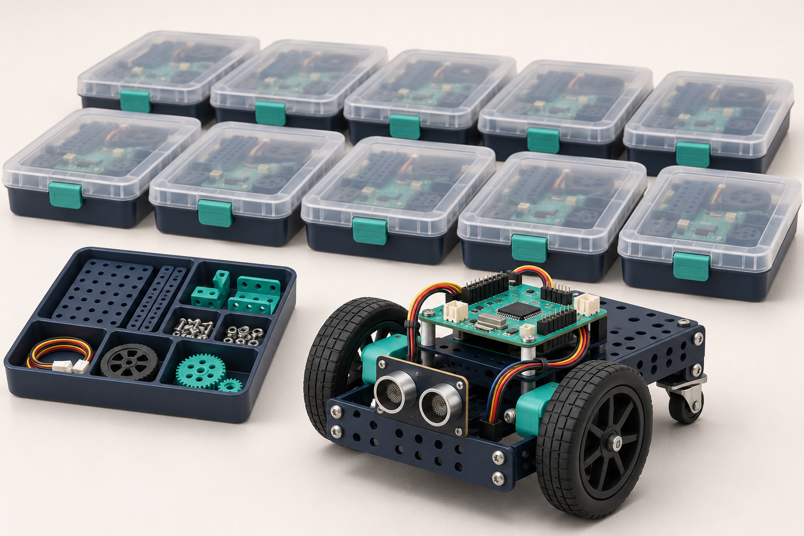

One kit. Many investigations.
Planned reusable drive bases with modular frames, removable sensor mounts, and replaceable wheels. Teams rebuild and reuse parts across lessons and future cohorts.
Order by email
Build a robot.
Measure what happens.
Make it better.
One classroom set for approximately 20–30 middle-school learners, with 10 planned reusable robot kits and a six-week curriculum. Students work in teams to build, calibrate, and program a robot.

Order by email. Send your order request to SuperRobots. We will reply with the kit configuration, price, availability, shipping and return terms, and payment instructions for your approval.
Planned reusable drive bases with modular frames, removable sensor mounts, and replaceable wheels. Teams rebuild and reuse parts across lessons and future cohorts.
Explore motors with encoders, distance and reflectance sensors, calibration, and logged results. Compare predictions with evidence from the real world.
Proposed guided coding activities progress from simple movement to sensor decisions and feedback. Block-based entry and Python extensions are planned; platform support is still being evaluated.
Draft pacing: one 60–90 minute session per week, with teams of 2–3. Activities and timing will be refined through educator feedback.
Assemble a reusable drive base. Measure travel over repeated timed runs; record variation.
Evidence students createBuild log + baseline distance table
Count wheel rotations, convert counts to distance, and compare predicted travel with measured travel.
Evidence students createEncoder-to-distance model
Test wheel diameter, traction, and left/right differences. Change one variable at a time.
Evidence students createCalibration chart + error analysis
Collect distance or reflectance readings. Explore noise, thresholds, and repeatable detection.
Evidence students createSensor plot + threshold justification
Compare an open-loop run with proportional feedback. Explore integral and derivative terms as an extension.
Evidence students createBefore/after path error graph
Solve a delivery or navigation challenge. Iterate, document evidence, and present design tradeoffs.
Evidence students createDemonstration + engineering report
The proposed set equips 10 teams of two or three. Final components are pending validation.
Instructor materials are planned alongside the hardware, so each session has a question, a repeatable test, and something meaningful to discuss.
Email us the number of classroom sets you need and your shipping city, postal code, and country. We will confirm the details with you before arranging payment.
We aim to make the robot equipment reusable and self-contained. Computer, browser, connectivity, and any construction-system compatibility requirements will be specified before a pilot is offered. Please share your available devices when you contact us.
The learning approach builds on familiar construction play. LEGO compatibility is a design goal to evaluate, not a confirmed feature. This proposed program is independent and is not affiliated with or endorsed by the LEGO Group.
Middle-school students ages 10–14 in supervised school or club settings. Beginners would start with guided investigations; experienced students could extend the coding, data analysis, and control challenges. No curriculum alignment or certification is claimed.
Tell us how many classroom sets you need and where they will ship. Include any school purchasing requirements.
Email your order requestYou can also write to zhutoulala@gmail.com. Please leave payment details and student information out of your email.